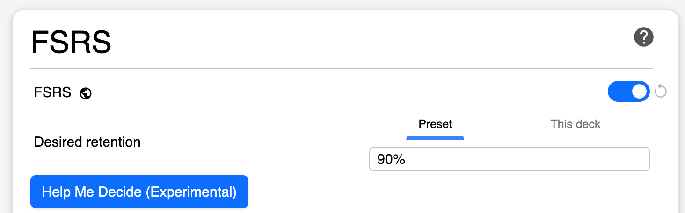
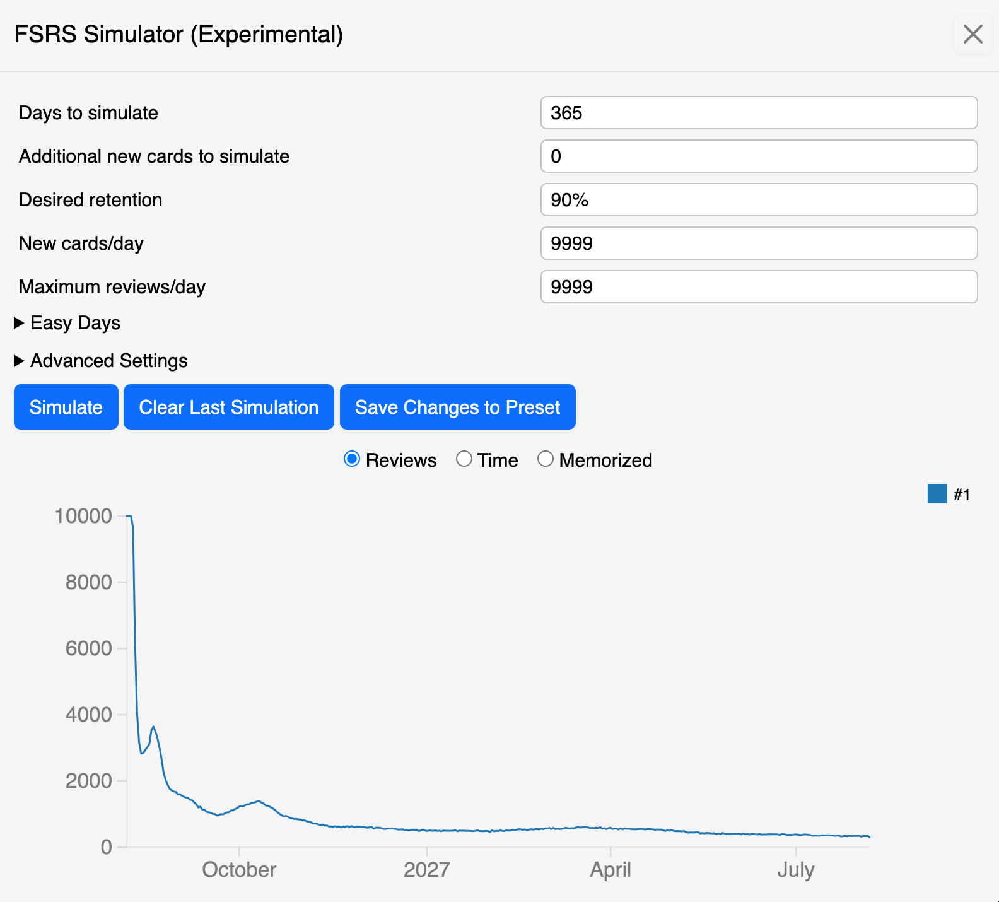

For most Anki users, 0.90 is a sensible starting point. Change it only when you can name the tradeoff you want: more reliable recall for high-stakes material, or a lighter review load for lower-priority knowledge.
What desired retention actually controls
With FSRS enabled, desired retention is the probability of recalling a card when Anki schedules it for review. A setting of 0.90 asks the scheduler to show cards when their estimated retrievability approaches 90%. It does not guarantee that every deck or every week will land on exactly 90%.
The official Anki deck-options documentation describes the central tradeoff: raising desired retention shortens intervals and increases reviews. Lowering it lengthens intervals, but creates more forgetting and relearning.

Why 95% can cost far more than it sounds
A change from 90% to 95% looks small on a settings screen. Its scheduling effect is not small. The Anki manual illustrates that a card reviewed after 100 days at 90% desired retention may need to return after roughly 46 days at 95%. At 97%, the example interval falls to about 27 days.
Your exact curve depends on your cards, history, parameters, and answer habits. The reliable pattern is that workload rises increasingly fast as desired retention approaches 100%. This is why “I want to remember everything” is not yet a usable setting.
| Situation | Reasonable starting decision | Check before changing |
|---|---|---|
| General long-term learning | Start near 0.90 | Can you finish due reviews consistently? |
| High-stakes exam material | Consider a modest increase | Use the simulator for the exam horizon |
| Large low-priority reference deck | Stay near the efficient range | Would fewer new cards solve the problem first? |
| Current backlog | Do not raise retention yet | Stabilize intake and clear overdue reviews |
Use “Help Me Decide” as evidence, not a command
Current Anki versions provide “Help Me Decide” beside the desired-retention setting. It uses your review history to suggest a retention value for a chosen amount of study time. Treat the result as a starting point: a higher target can still make sense when reliable recall is worth the additional workload.
Older Anki versions offered a separate minimum-recommended-retention calculation. That control was removed in Anki 25.07, so current users should use “Help Me Decide” and the simulator instead. The FSRS explanation of optimal retention provides the underlying workload-versus-knowledge context.
Test the decision in Anki’s simulator
The simulator is more useful than copying another person’s percentage because it uses your preset and memory states. Run it before making a meaningful change:
- Open the deck options for the relevant preset and find the FSRS simulator.
- Choose a realistic time horizon. For an exam, simulate through the exam date; for ongoing learning, use a longer period.
- Enter the new-card intake you genuinely expect to maintain.
- Compare reviews per day and minutes per day at your current target and the proposed target.
- Choose a workload that still leaves room for card creation, understanding, and missed days.

A simulator output is an estimate, not a promise. Failed cards, irregular study, new material, and changes in card quality will move the real workload.
Separate priorities with presets, not daily tweaking
If one group of cards genuinely matters more, assign it an appropriate preset rather than changing the global target every few days. A licensing-exam deck and a low-priority trivia deck do not necessarily deserve the same tradeoff.
Keep the number of presets manageable. Different settings are useful when they represent a real difference in material or consequences. They become noise when every small deck has its own target and you can no longer explain why.
Review the result over weeks
After changing desired retention, avoid judging the setting from one difficult session. Track monthly true retention, daily load, time per review, and whether you consistently finish due work. Our guide to Anki true retention and FSRS statistics explains how those signals fit together.
If workload becomes unsustainable, first check new-card intake and card quality. Desired retention is powerful, but it should not become the only knob you turn.
Keep the tradeoff visible.
SynapsePro brings planning, focus tools, and learning statistics into the same Anki workspace so a retention target stays connected to the time you actually have.
Get SynapsePro free